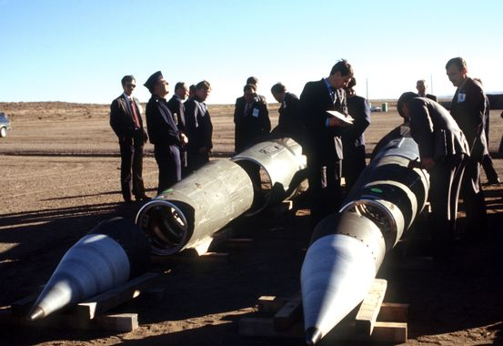
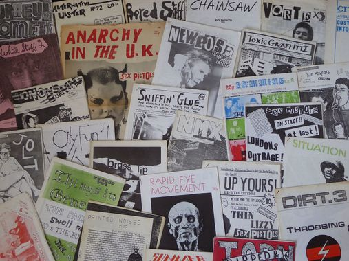
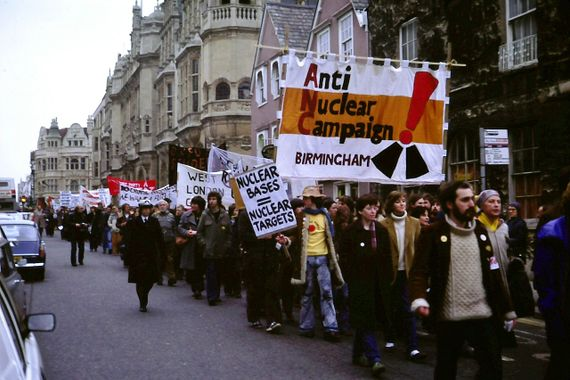

take action!
|  |
push for stricter arms controlarms control treaties, namely the nuclear non-proliferation treaty, the strategic arms limitation treaty, and the strategic arms reduction treary, have been the primary way we have reduced the global stockpile of nuclear weapons, and the abandonment of several of these treaties by the united states and russia has led to the recent increase in the world nuclear threat. reinstating existing arms control treaties, and pushing for more expanisive controls, is required to put us on the path to a nuke-free world. call your local representatives and demand they do this! how to call your local rep |
defund nukesnuclear weapons are expensive, and the planned investment of trillions of dollars by the united states and russia into modernising their arsenals has significantly increased the nuclear threat. the global demand to defund the police has brought attention to the significant investments in machinery of death by corporations and governments, and calls to defund and eliminate nuclear arsenals should be incorporated into this demand. call your reps and get in touch with local activists to make this happen! how to find local activists |
|
|  |
spread the wordwe all know that raising awareness is overrated and lame, but it remains the first step in any protest movement, and it is sorely needed here. nuclear disarmament has long since departed the public consciousness, with the exception of the Stop Trident campaign in the UK,and media coverage of nuclear weapons is focused exclusively on non-proliferation. share this website around, make a site of your own, post on social media, anything to get this issue back in people's minds! how to make a zine |
|  |
disobeynuclear installations are spread across the world, and the facilities that manufacture and maintain these facilities are even more widely spread. there is probaly one near you, and if there isn't a protest organized around it, start one! after a global pandemic, economic crisis,and uprising against police violence, there is no time like the present to oppose the machinery of death ruling our lives, and are nukes not the ultimate death machines? how to find your local piece of militarism |